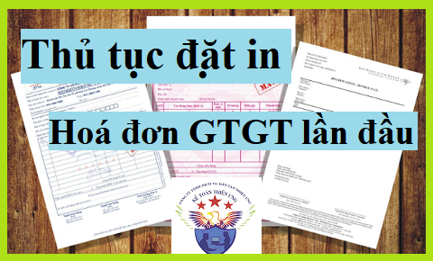

Hướng dẫn thủ tục đặt in hóa đơn GTGT lần đầu theo Thông tư 39, 26 và 37/2017/TT-BTC quy định: Đối tượng được đặt in hóa đơn, hồ sơ đặt in hóa đơn, thời hạn xử lý hồ sơ ...
Đối tượng được đăt in hóa đơn GTGT:
- Những DN kê khai thuế GTGT theo phương pháp khấu trừ.
Chú ý: Nếu là DN kê khai thuế GTGT theo pp trực tiếp thì các bạn phải sử dụng hoá đơn bán hàng (Hoá đơn này các bạn lên Chi cục thuế để mua nhé. Thủ tục các bạn có thể xem tại đây nhé: Thủ tục mua hoá đơn bán hàng)
--------------------------------------------------------------------------------
Dưới đây Kế toán Diệu Tâm xin hướng dẫn thủ tục đặt in hoá đơn GTGT:Mới nhất theo Quyết định 2378/QĐ-BTC ngày 17/11/2017 (có hiệu lực thi hành kể từ ngày 12/6/2017) của Bộ tài chính quy định thủ tục Đề nghị sử dụng hóa đơn tự in, đặt in cấp Chi cục thuế được hướng dẫn như sau:
- Bước 1. Người nộp thuế thuộc đối tượng được tạo Hóa đơn tự in, đặt in phải có văn bản đề nghị sử dụng hóa đơn tự in gửi đến cơ quan thuế (CQT).
- Bước 2. CQT tiếp nhận:
+ Nếu Hồ sơ được nộp trực tiếp tại CQT, công chức thuế tiếp nhận và đóng dấu tiếp nhận, ghi thời gian nhận, ghi nhận số lượng tài liệu trong hồ sơ và ghi vào sổ văn thư.
+ Nếu Hồ sơ được gửi qua đường bưu chính, công chức thuế đóng dấu ghi ngày nhận hồ sơ và ghi vào sổ văn thư.
- Thành phần hồ sơ: Văn bản đề nghị sử dụng hóa đơn tự in, đặt in theo mẫu tại Điểm 3.14, Phụ lục 3 ban hành kèm theo Thông tư 39/2014/TT-BTC.
- Số lượng hồ sơ: 01 (bộ).
- Thời hạn giải quyết: 02 ngày làm việc kể từ ngày nhận được văn bản đề nghị.
-------------------------------------------------------------------------------------------
Trình tự cụ thể các bước như sau:
BƯỚC 1: NỘP ĐƠN ĐỀ NGHỊ SỬ DỤNG HOÁ ĐƠN:
- Trước khi đặt in hóa đơn lần đầu, DN phải gửi Đơn đề nghị sử dụng hóa đơn đặt in Mẫu số 3.14 đến cơ quan thuế quản lý trực tiếp.
Tải về tại đây: Mẫu đơn đề nghị sử dụng hóa đơn đặt in
- Kể từ ngày 12/6/2017 theo Thông tư 37/2017/TT-BTC quy định:
“Trong thời hạn 02 ngày làm việc kể từ khi nhận được đề nghị của tổ chức, doanh nghiệp, cơ quan thuế quản lý trực tiếp phải có Thông báo về việc sử dụng hóa đơn đặt in (Mẫu số 3.15 Phụ lục 3 ban hành kèm theo Thông tư 39).
- Trường hợp sau 02 ngày làm việc cơ quan quản lý thuế trực tiếp không có ý kiến bằng văn bản thì doanh nghiệp được sử dụng hóa đơn đặt in. Thủ trưởng cơ quan thuế phải chịu trách nhiệm về việc không có ý kiến bằng văn bản trả lời doanh nghiệp.”
=> Sau khi Cơ quan thuế đã tiếp nhận đầy đủ hồ sơ của DN sẽ có giấy hẹn xuống DN kiểm tra (Tiếp theo Bước 2)
BƯỚC 2: TIẾP ĐÓN CÁN BỘ THUẾ:
Khi Cán bộ thuế sẽ đến kiếm tra trụ sở chính, cần chuẩn bị sẵn các giấy tờ sau:
- Đã treo biển doanh nghiệp tại địa chỉ trụ sở chính;
- Có Văn bản xác nhận quyền sử dụng địa chỉ trụ sở chính của công ty là hợp pháp (Hợp đồng thuê nhà, Hợp đồng mượn nhà Hoặc Giấy chứng nhận quyền sử dụng đất ghi tên Giám đốc công ty)
- Giấy chứng nhận đăng ký kinh doanh, Đăng ký mẫu dấu, Dấu tròn
- Có bàn ghế, sổ sách và các vật dụng liên quan khác chứng minh công ty có hoạt động
- Có hợp đồng mua bán hàng hoá hoặc Cung cấp dịch vụ chứng tỏ công ty đã hoạt động và có nhu cầu xuất hoá đơn cho khách hàng.
=> Sau khi Cơ quan thuế kiểm tra và đồng ý bằng văn bản cho phép DN sử dụng hoá đơn -> Lúc này DN sẽ tìm nhà in để đặt in hoá đơn GTGT.
BƯỚC 3: TÌM NHÀ IN:
Lưu ý: Nhà in phải là DN có ĐKKD còn hiệu lực và có giấy phép hoạt động ngành in (bao gồm cả in xuất bản phẩm và không phải xuất bản phẩm). Các bạn có thể đến cập nhật danh sách các nhà in trên Chi cục thuế.
Khi đã lựa chọn được Nhà in các bạn cần:
- Chọn mẫu hóa đơn, thống nhất về giá in hóa đơn.
- Thống nhất về Market (nội dung hình thức) của tờ Hoá đơn GTGT mà các bạn đặt in.
- Làm hợp đồng đặt in hóa đơn, hồ sơ gồm:
BƯỚC 4: HỒ SƠ ĐẶT IN HÓA ĐƠN GTGT:
- Bản sao Đăng ký kinh doanh công ty (công chứng)
- Bản sao Chứng minh thư nhân dân của Giám đốc
- Giấy giới thiệu (Nếu giám đốc trực tiếp đi làm thì không cần giấy giới thiệu)
- Bản sao chứng minh thư người được giới thiệu
- Biên bản kiểm tra trụ sở hoặc Xác nhận của Chi cục thuế cho phép đặt in hoá đơn.
CHÚ Ý:
- Hoá đơn GTGT đặt in phải được in theo hợp đồng.
- Hợp đồng in hoá đơn được thể hiện bằng văn bản và trên Hợp đồng PHẢI ghi cụ thể: Loại hóa đơn, ký hiệu mẫu số hóa đơn, ký hiệu hóa đơn, số lượng, số thứ tự hoá đơn đặt in (số thứ tự bắt đầu và số thứ tự kết thúc),
- Kèm theo hóa đơn mẫu và thông báo của cơ quan thuế được phép đặt in.
BƯỚC 5: THANH LÝ HỢP ĐỒNG IN:
Sau khi đã nhận xong hóa đơn đặt in, các bạn phải tiến hành:
- THANH LÝ HỢP ĐỒNG với nhà in. (nếu không thanh lý sẽ bị phạt).
- Yêu cầu nhà in xuất hóa đơn đỏ.
BƯỚC 6: LÀM THỦ TỤC THÔNG BÁO PHÁT HÀNH HÓA ĐƠN:
Lưu ý: Trong vòng 2 ngày trước khi sử dụng hóa đơn GTGT, các bạn phải làm thông báo phát hành hóa đơn gửi đến cơ quan thuế quản lý trực tiếp.
- Nếu các bạn không làm thủ tục thông báo phát hành hoá đơn mà đã sử dụng hoá đơn sẽ bị phạt từ 6 - 18 triệu.
Các bạn muốn học cách tính thuế - kê khai thuế, xử lý hóa đơn chứng từ, kỹ năng quyết toán thuế ... Có thể tham gia: Lớp học kế toán thuế thực tế tại Kế toán Diệu Tâm.
_______________________________________________
